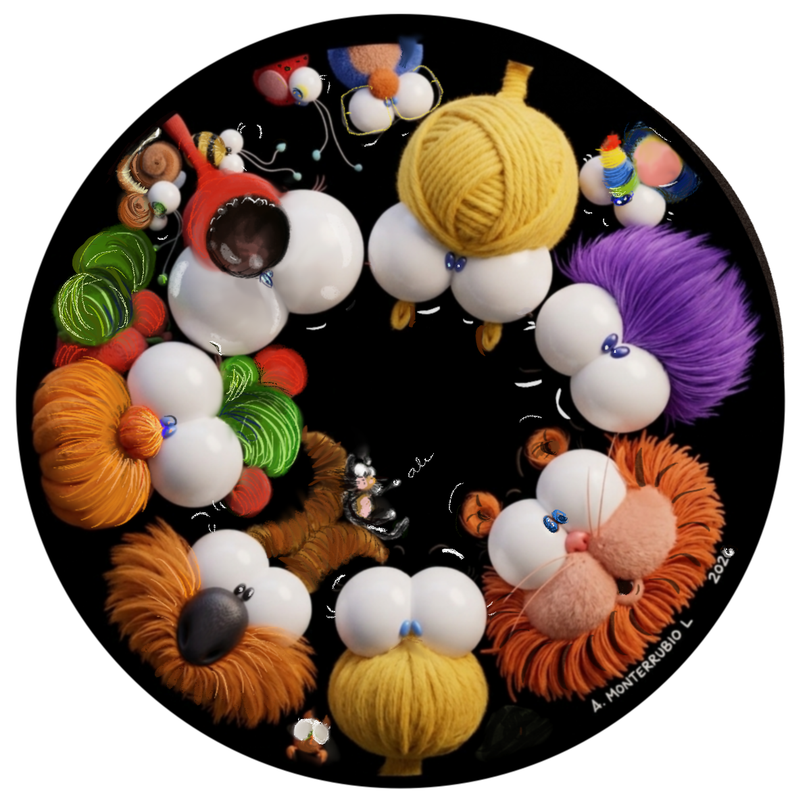
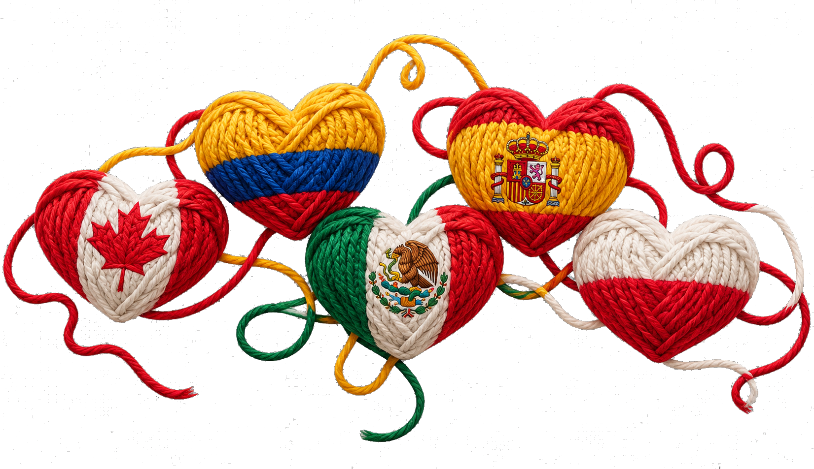

WŁĄCZANIE · SAMOAKCEPTACJA · POCZUCIE PRZYNALEŻNOŚCI
We All Fit In
Akceptowanie różnorodności i wspieranie tych, którzy mogą czuć się wykluczeni.
ŚWIAT, W KTÓRYM RAZEM DORASTAMY
Społeczność bohaterów, opowieści i doświadczeń, które pomagają dzieciom poznawać siebie, rozumieć innych i uczyć się żyć razem.

MAGIA MONOCUCOS
MONOCUCOS to pełna życia społeczność bohaterów w różnym wieku, która wspiera dzieci w rozwoju emocjonalnym i społecznym.
Poprzez opowieści, wyobraźnię i wspólne doświadczenia zachęca do rozmów o tym, co nas różni, co czujemy i co możemy zrobić dla innych.
OPOWIEŚCI
Każda opowieść rozpoczyna rozmowę.
Akceptowanie różnorodności i wspieranie tych, którzy mogą czuć się wykluczeni.

Odkrywanie własnych talentów i zrozumienie, że nasze działania mogą zmieniać otaczający nas świat.

Zabawna i wzruszająca opowieść z perspektywy dziecka o mamie, która z miłością i wytrwałością mierzy się z życiowymi wyzwaniami.

POSTACIE
Społeczność, w której każdy wnosi coś wartościowego.
Nie wszyscy jesteśmy tacy sami. I właśnie to czyni naszą społeczność wyjątkową.
MONOCUQUEANDO
Różnice sprawiają, że każdy z nas jest wyjątkowy.
Każdy ma swoją historię.
Każda emocja ma nam coś do powiedzenia.
Nikt nie powinien czuć się samotny.
Każdego dnia możemy odkryć w sobie coś nowego.
NASZE DZIAŁANIA
MONOCUCOS wykorzystuje swoich bohaterów, opowieści i materiały w pracy z dziećmi, rodzinami, nauczycielami i instytucjami w różnych środowiskach.
MONOCUCOS W SPOŁECZNOŚCIACH
Inicjatywa, która przenosi magię MONOCUCOS do szkół, społeczności lokalnych, szpitali i instytucji.
POZNAJ PROJEKT
MONOCUCOS
Jeden świat dla wszystkich, wszyscy tworzymy jedno.
POROZMAWIAJMY